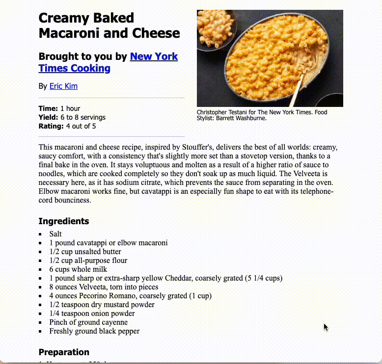
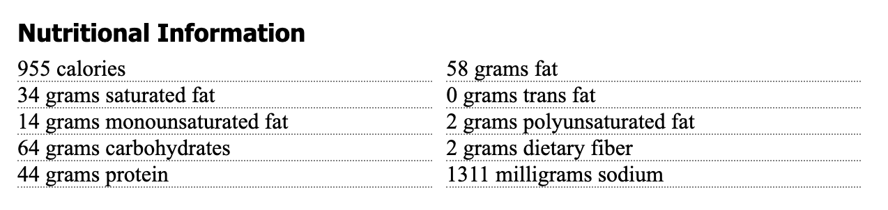

7 CSS practice
The CSS language is the skin and DNA attributes that changes the look of the HTML skeleton. We use the hierarchical rules of CSS (Cascading Style Sheets) to set fonts, colors, positioning and more. In this lesson, we’ll take the HTML skeleton we made in our previous lesson and make it pretty.
7.1 Tutorials
Similar to the last lesson you need to do a series of tutorials before attempting this practice assignment. The CSS lessons will take longer than the HTML set of lessons.
Do the Codecademy CSS tutorial lessons described below:
- Syntax and selectors
- Setup and Syntax
- Selectors
- Visual rules
- Visual rules
- The Box Model
- The Box Model
- Changing the Box Model
- Display and Positioning
- CSS Display and Positioning
7.2 Goals of this lesson
- To understand default browser styling and how to handle it.
- To use CSS styles to give visual appeal to web pages, applying the principles you learned in the Codecademy lessons.
This will be our finished product:

Here is a PNG of the practice project, which might be easier to study.
{kind=link}
7.3 Resources
You have the internet at your disposal for help, but please avoid AI tools at this time. (We’ll explore those later.) Here are some resources you might find useful.
- You can review steps in the Codecademy Learn CSS course.
- You can look up specific resources in the W3 Schools HTML documentation. Shay Howe has a pretty good tutorial. Mozilla also has good CSS docs.
- Google it. Use good search techniques: Include the term “css” and your goal or css property.
7.4 CSS Reset
Let’s get our project loaded.
- Go into your repo (yourname-html-css) from the previous HTML class lesson
- Open your
recipe.htmlfile - Use the Go Live button to start your Live Server.
With just HTML coding, your browser will display this page in an entirely readable way with some default sizing.
That said, different browsers display defaults just a little bit differently. Here is this page in Chrome, Firefox and Safari.
Notice the (admittedly subtle) difference in vertical spacing. The image starts in different places.
And a little further down the page, notice the difference in the size of the bullets and the line height between lines.
7.4.1 Add the reset file
There is way to deal with these differences. The concept – called a CSS Reset – is to zero out all margins, padding and text sizes so you have a zero base to work from before applying new styles. The version that we will use is from HTML5Doctor, and you can read about it here.
So, let’s do it:
- In your yourname-html-css folder, create a new blank file called
reset.css– you might use thetouchcommand to do this, or File > New File in VS Code – and then populate it with the contents of the HTML5resetCSS file. - We need to add a link in our HTML stylesheet to the reset CSS stylesheet. Put this before the closing
</head>tag.
(If you start typing “link” then Emmet will give you options, where you can choose link:css.)
<link rel="stylesheet" href="reset.css">The link tag basically connects these files together. I’ll be honest … I never remember how to write it … I depend on Emmet or look it up.
Save your page and look at you Live Server to watch your something-kinda-special web page turn into muck.
7.4.2 Relative font sizing
If you’ve worked with any HTML font sizing before, you might be familiar with setting the size of things in pixels, or px. When you use that type of measurement with fonts it makes it difficult to adjust them for different screen sizes, which is common with responsive design. (Responsive design is making web pages that work equally well on phones, tablet and desktops.)
So we’ll use a method to build upon our CSS reset that creates a base size for fonts, and then makes any further changes relative to that base size. There is more to it than that, but we’ll skip the why and discuss the how:
- We’ll reset the browser default text size from 16px to 10px. We do this by using a percentage: 62.5% of the original 16px.
- Now every
remvalue we use is based on factors of 101remis equal to 10px and2.4remis equal to 24px for a normally-sized browser.
7.4.3 Create styles file, reset defaults
- Create a new file and call it
styles.css. - Now, in your
recipe.htmlfile, add a new<link>tag referring to that css file after thereset.csslink. - Now we’ll add some defaults for the
<html>tag in thestyles.cssfile. Add this to the top, then save both the css and html files.
html {
font-family: 'Times New Roman', Times, serif;
font-size: 62.5%;
}If you check your live server you’ll see things got worse … everything is super small now. Don’t worry, we’ll fix it.
7.4.4 Set text sizes
Let’s fix up the text sizes. We’re going to set a base size for all basic text elements, and then change them later in the places where we need them. Add this to your styles file:
p, ul, ol, dl {
font-size: 1.6rem;
line-height: 1.8rem;
margin-bottom: 12px;
}What this has done is set all text-type elements at what is the equivalent to 16px, but we’ve used the rem measurement to set it relative to the base size, which was essentially 10px.
We’ve set a line-height so lines of type don’t sit on top of each other and we’ve also given all of those elements a bottom margin so the elements have some space between them.
In the definition above, it’s important that we have commas between each HTML element. If we don’t have those, the browser will think we need all of them together (and) instead of any of them (or). We are setting these rules for p or ul or ol, etc. Not all of them used together.
7.4.5 Set headline sizes
Now we’ll set headlines font and sizes. Add this to your styles.css file, save and refresh your browser:
h1, h2, h3, h4, h5, h6 {
font-family: Tahoma, Arial, sans-serif;
}
h1 {
font-size: 2.7rem;
line-height: 3.1rem;
margin: 20px 0;
}
h2 {
font-size: 2rem;
line-height: 2.4rem;
margin: 16px 0;
}
h3 {
font-size: 1.75rem;
margin: 25px 0 8px 0;
}The first rule sets the font to a series of sans serif fonts, and we’ve done it for all headline sizes.
The other rules set sizes and margins for various sizes of headlines. You’ll notice that the margins are set in a single line. You can review the rules regarding that here.
7.5 Set article width
Having all this smooshed to the left side of the page is annoying. Let’s set some boundaries for the article. If you look at the finished example above, the content is a certain width and centered in the page. We’re going to do this by writing a style to the <article> semantic tag we created in the last lesson.
- In
styles.css, add the following styles:
article {
max-width: 620px;
margin-right: auto;
margin-bottom: 30px;
margin-left: auto;
}This margin-<direction>: auto; style was discussed in the Learn CSS lesson in Codecademy.
If you’ve done this right, your live server should show that all the content is centered on the page.
7.6 Using class and id
So far, all of the styles we’ve created has been written to an “element” tag, like <p> or <h3>. But what if we want to style two different paragraphs differently?
For instance, on our page we have two <p> tags that serve different purposes: Our byline and our intro. We want them to look different. This is why we added class="byline" and class="intro" to those paragraphs.
There is a cascading hierarchy to styles (hence the term Cascading Style Sheets):
- HTML elements are the most generic thing you can style. A
<p>tag or<h1>, etc. If you write a style for one, it affects ALL of those elements on your site. The style for a<p>tag is:p {selector: rule;} - But sometimes you have common elements that you re-use often, like byline. You always want those to look a certain way on your site, but you want them to look differently than you body text. So, you “classify” that element with a class attribute:
class="byline". Now that it is classified, we can write one style that will affect all the bylines. When we write a style for one of these classes we indicate that by preceding the class name with a period:.byline {font-family: Arial;}. - There are also instances when an element is used only one way on a page, so we can “identify” that element with an id attribute:
id="unique-whatever". An example on our page is our ingredients list; there is always only one of those on a page. When we use anidwe are indicating to the browser (and our fellow coders, and even Google) that this element only appears once on this page. When we write a style for an id, we precede the name with a hash to indicate the style is for an id:#unique-whatever {font-family: Times;}.
- Always use lowercase characters in class names and use dashes if they have more than one word. Using a common convention to write code helps people collaborate because is predictable and more readable.
- Name your classes for what the element is, not what you want it to look like. If you used the class name
tahomainstead ofbylineand then decided later to change your byline font to be “Franklin Gothic”, that would be confusing.
7.6.1 Setting style by class
We want our byline to be in a sans-serif font while we want our other paragraphs to maintain the default serif font, so let’s write a style to it.
We add a . before the style name to target it, so .byline.
- Add the style below for the byline
.byline {font-family: Tahoma, Arial, sans-serif;}We’ve changed the font from the default to Tahoma, with some backups in case a user doesn’t have that font.
About font names … If you wanted to use Franklin Gothic as as a font it would need to be in quotes because it is multiple words: font-family: "Franklin Gothic", Arial, sans-serif;.
We will style to an id= attribute a little later in the assignment.
7.6.2 Tricks of the trade
When writing styles I’ll often use the browser Inspector to experiment with what they might look like on the screen. Once I figure out my style, I can then add it to my styles file.
It’s easier to show this than to write it out, but here are the steps:
- Use control-click on the element to get the contextual menu and choose Inspector.
- Make sure you are on the correct element in the Element tab of the Inspector.
- Add/modify rules rules in the Styles tab of the Inspector.
Here is a video example.
I’ll drop a couple more tips as we go through the lesson.
7.7 Borders
While there is an HTML element for a horizontal rule <hr>, it’s best to set such things using CSS. For instance, we need want dotted borders on our recipe stats section:
We’ll get to the text placement next, but let’s set up the fancy lines at the top and bottom of the description list first.
- Add styles for the
dlelement to add dotted lines:
dl {
border-bottom: 1px grey dotted;
border-top: 1px grey dotted;
}Check your live server to see the borders. We used a shorthand for the border property that allows us to set the size, color and style in one rule.
7.8 Float
Another story about tricks of the trade. When I was preparing this lecture, I had trouble getting the <dt> and <dd> values to show on the same line. So, what do you think I did? I googled it, of course, using the phrase “make css dd dt on same line”. I got my answer here. It wasn’t the first answer of my Google search … I had to poke around on different search results until I found one that worked for me.
But what the answer does is introduce the float style for us, which is one of the ways we can position items on a page using CSS. We can use float to move our <dt> tags to the left of our <dd> tags so they are on the same line.
- Add the following styles to your style sheet.
Try adding one rule at a time and saving your styles file so you can see what each one does in your live server. I really encourage you to type out the rules so you can see how VS Code helps you write.
dt {
float: left;
margin-right: 5px;
font-weight: bold;
}- The first rule moves the
<dt>elements to the left of any element that follows. - The second puts some margin on the right side of hat
<dt>tag so it isn’t smooshed next to the<dt>element. - The last line makes the
<dt>text bold.
We have just a bit more cleanup styling to do to adjust the type styles, margins and padding of the description list.
- EDIT your rules on the
<dl>element to add each line below. Again, try adding them one at a time so you see what each rule does.
font-family: Tahoma, Arial, sans-serif;
font-size: 1.4rem;
padding: 12px 0px;
margin-top: 16px;Now your recipe stats should look like our example above.
7.9 Percentage widths
Another tool to control the position of elements on an page is the width style, which we will use to divide our page based on the percentage of our page.
If you look at our finished example at the top of this lesson you’ll see that the photo and caption are sitting to the right of the headline, byline and such. We’ll use float to move the header element to the left of the figure element, but we also need to regulate how wide all these things are so they fit in our story well.
One challenge is that our website will likely have LOTS of figures/photos, so we want to move just this one display as it relates to the main image in a recipe story. Since there is always only ONE main image for each recipe, we can use an id to target this and manipulate it.
So there are two steps here: Edit our HTML to add the id, then write styles to manipulate it.
- In your
recipe.htmlfile, find your<figure>tag and add the id called “main-recipe-photo”:<figure id="main-recipe-photo">. Save the HTML file. - Go into your
styles.cssfile and add the following rules:
Again, try adding these three rules one at time so you see how each one affects the layout.
header {
float: left;
width: 48%;
}
figure#main-recipe-photo {
float: right;
width: 48%;
}
figure#main-recipe-photo img {
width: 100%;
margin-top: 20px;
}This is a lot to break down.
- In the
header, we set the whole element (which includes the two headlines, byline and stats box) to float to the left and only take up48%of the page. - Then we take the
figureand float it to the right and make it only48%the page. It moves it, but the photo is too big to fit in that space. Note we are targeting only figures with anidof “main-recipe-photo” so this would not affect other photos on the page. - So in the last rule we target images inside figures with an id of “main-recipe-photo” and set the width to be
100%of the available space, which is that 48% segment within the figure. We add a margin so it starts about even the main headline.
7.9.1 Style our figcaption
Let’s pretty up our figure caption. There is nothing new here, but we need to add a style for the figcaption element. We are setting this to the element because we want this style for all our captions across our page and website.
figcaption {
font-family: Tahoma, Arial, sans-serif;
font-size: 1.2rem;
margin-top: 2px;
margin-bottom: 20px;
}We’re just setting font styles and giving a little space between stuff.
7.9.2 Breaking a float
We’ve made progress, but we’re not quite there.
As you can see here, the intro is creeping up under the photo, but we want it to go all the way across the page. It’s getting pulled there because of the floats on the elements above. We can fix this by adding a clear style on our intro text. The clear tag cancels out floats, and you can set it to clear left, right or both directions.
When we coded our HTML file we had added a class called “intro” to that paragraph, so we will target that with this next rule:
.intro {
margin-bottom: 20px;
clear: both;
}This pushes the intro down so it flows across the page. There is a little space under the photos, but that is OK because that main photo might not always be that shape.
7.10 List styles
The default unordered list looks crappy. We want to do two things here:
- Let’s move the bullets so they line up with the other text in the article. We do this with list-position.
- Let’s change the style of the bullets to add a little style flare with list-style-type.
We are setting these as our default unordered list styles for the site.
- Add to your css file:
ul {
list-style-position: inside;
list-style-type: square;
}If you are living right, your list should look like this now:
7.10.1 Set the ordered list style
We need to do the same here for ordered lists.
- Add these styles to add little margin under each list item so they can breathe.
ol {
list-style-position: inside;
}
ol li {
margin-top: 8px;
}7.11 Alternating styles
Our nutrition information is our last challenging piece and we get to learn some more advanced CSS fu. This is our goal:

Before we can apply styles to this unordered list, we need to identify it in some way so we don’t also make changes to the ingredients list. To do that, you’ll go in and add an to the <section> element:
- Go into your
recipe.htmlpage and find the semantic HTML tag<section>for the Nutrition section. - Edit that tag to add
id="nutrition".
Our nutrition list currently has a vertical structure. We could separate these items into two sections and float the two sections, but if they were generated from an application or CMS of some kind, we might not know when to separate the left section from the right.
What we’ll do instead is use a combination of float and a special CSS selector called nth-child to adjust every other list item.
Let’s do this in incremental steps so you can see the magic happen.
- Set the dotted border on the li tags with this:
#nutrition li {
list-style-type: none;
border-bottom: grey dotted 1px;
}Since we only want to change only the list items that are within the nutrition div, we used both the #nutrition id and the li element selectors.
- The first rule we choose a “none” list style to remove the bullets
- Then we add the grey dotted line.
Now let’s use some of the same techniques we used with the header and figure to get these side-by-side.
- Edit that style rule to add these two rules:
float: left;
width: 48%That starts putting these side-by-side, but there is no gutter between them.
Now the fun part … we need to apply styles to just every other list item (those that now fall into the left column). Our first challenge is to make sure we are targeting the right element. Another trick of the trade: I sometimes write a temporary style to an element, like turning the background red, just to make sure I’m getting the right thing. Let’s do that here.
- Add this rule with the nth-child designation for “odd” elements.
#nutrition li:nth-child(odd) {
background-color: red;
}This shows us that our style is getting the alternating rows:
Let’s pause here to break down that rule of the nth-child. The nth-child rule lets us apply a style to a specific list item. Where we have used (odd) you could also put in a number, like (4) and it would apply to the fourth item in the list. Or (even). Try it!
OK, now that we know we have targeted the right items, we can add styles to add a right margin to push those even numbered items over a bit. We’ll also add a clear to those so the footer won’t keep crawling up.
- Edit the style rule to add these lines:
(Again, you might do them one at a time to see what they do.)
margin-right: 20px;- And now you can remove the
background-colorrule.
7.12 Good enough sometimes
If you followed the HTML assignment, you should have a <footer> section in your html, and right now it is probably floating off to the right of the nutrition list. This is because of all the floats in the nutrition section. We can use clear again to help us, but we have couple of other issues.
- Add these values to the css file:
footer {
clear: both;
text-align: center;
margin-top: 140px;
}
footer p {
font: 1.2rem Arial;
}We used clear: both to make sure there are no floats affecting the footer. Still, because of floats in the nutrition section above it the margins are acting super funky here. The CSS doesn’t understand how deep that nutrition section is, and that is why we have the crazy 140px value on the top margin.
Tricks of the trade #32?: If it works, especially if you check that it works in all the browsers (Chrome, Safari, Firefox, Edge), then maybe it is good enough.
7.13 Save and push to Github
You’ve done it! Compare your page to the example and make sure you have everything.
Use the git cycle to push all your code to Github.
7.14 Turn in the assignment
Turn in this Github URL to the CSS practice assignment in Canvas.